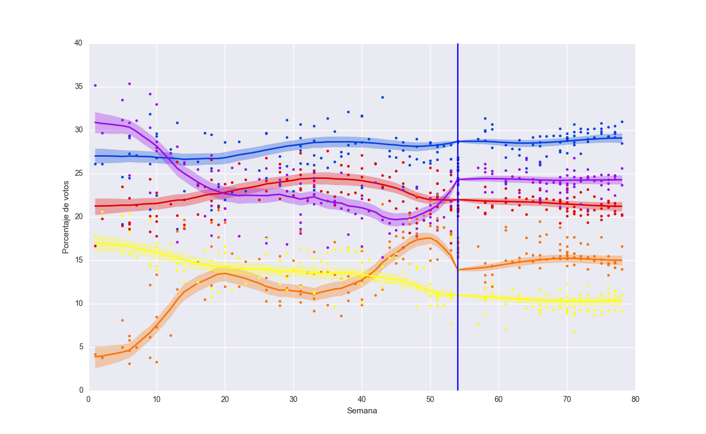
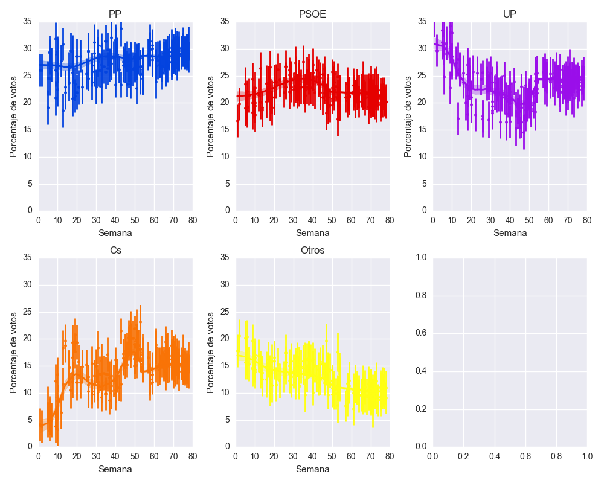
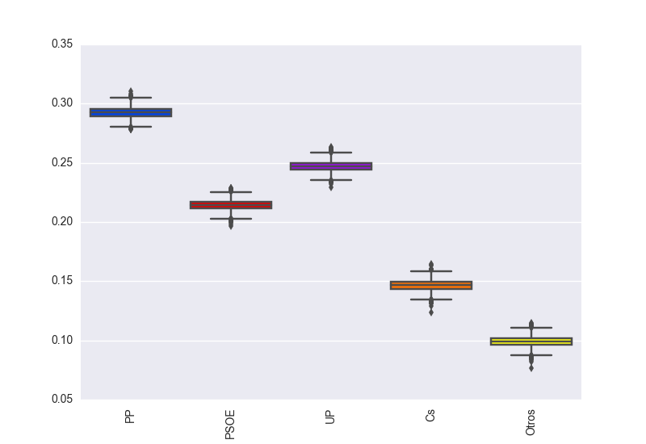
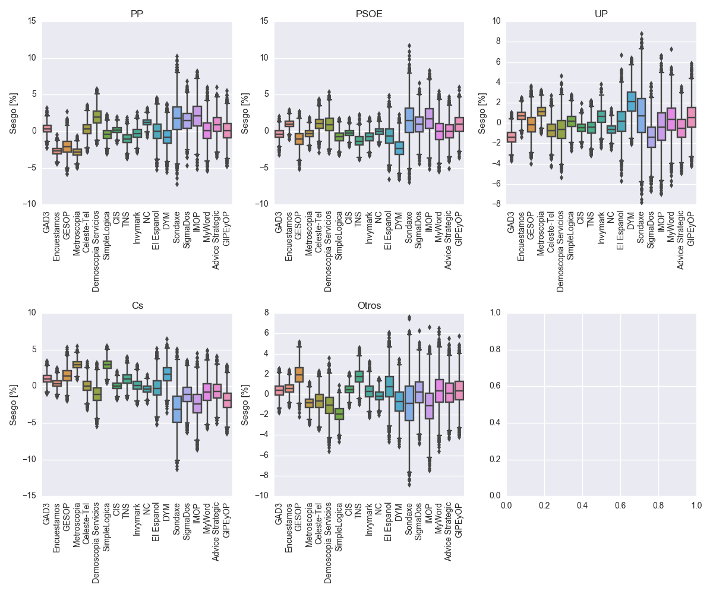
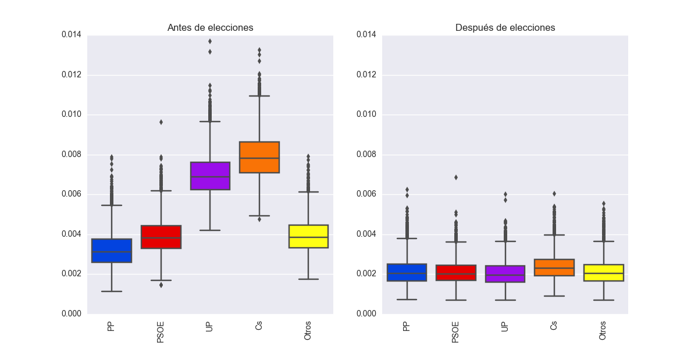

Resultado 19/5/2016
| 27.9-28.9-30.0 | 23.1-24.3-25.2 | 20.1-21.4-22.4 | 14.3-15.4-16.7 |
Análisis de los sondeos electorales 2016
Vamos a plantearnos como ejercicio analizar los sondeos electorales. Para ello cogemos como datos los sondeos recopilados en la página web de la Wikipedia para las elecciones de 2015 y los sondeos publicados en Electograph. Tengo que agradecer a @ChusCarro y a @kikollan por su ayuda. Consideramos sólo los partidos PP, PSOE, Unidos Podemos y Ciudadanos. El resto de partidos se consideran metidos dentro de un mismo saco, que vienen siendo alrededor del 10-15% en cada sondeo.
Para modelar la evolución temporal de los sondeos para cada partido, usamos un modelado con variables latentes. La idea es que los resultados de los sondeos son sólo una estimación ruidosa y sesgada de la intención de voto real de los votantes. Por tanto, considamos que $\theta_i(t_j)$ es la subyacente intención de voto para el partido i en el tiempo $t_j$. Esta variable se observa de forma ruidosa para cada empresa k que realiza el sondeo, y además incluye un cierto sesgo. Por tanto, nuestro modelo de observación es:
$$ y_{ik}(t_j) \sim N(\theta_i(t_j)+b_{ik},\sigma_k(t_j)^2) $$donde $b_{ik}$ es el bias que introduce la empresa de sondeos k sobre el partido i y $\sigma_k(t_j)^2$ es la varianza del sondeo realizado en el tiempo $t_j$ por la empresa k. Para los resultados de las elecciones, elegimos una varianza muy pequeña y no incluimos los sesgos, porque es el único momento en el que tenemos acceso directo a las intenciones subyacentes:
$$ y_{ik}(elecciones) \sim N(\theta_i(t_j),\sigma_k(t_j)^2). $$Es obvio que la suma de porcentajes de cada partido debe sumar 1 en cada sondeo, por lo cual debemos asegurarnos de que
$$ \sum_i \theta_i(t_j)=1. $$Además, es lógico asumir que, dadas suficientes casas de sondeo, los biases sumen 0 para cada partido: $$ \sum_k b_{ik}=0. $$ Por último, asumimos un proceso autoregresivo Markoviano para modelar la variación temporal de la intención de voto real para cada partido. Es decir, en cada sondeo, la intención de voto estará dada por una variable Gaussiana con media igual a la intención de voto anterior, y una varianza que debemos estimar para cada partido. Considero una varianza distinta antes que después de las elecciones:
$$ \theta_i(t_j) \sim N(\theta_i(t_{j−1}),\sigma_i^2) $$Como es un parámetro de escala, definimos un prior poco informativo sobre $\sigma_i$:
$$ \sigma_i \sim IG(0.01,0.01). $$Por último, debemos definir un prior para $θ_i(t_0)$, para el cual escogemos una distribución de Dirichlet con $\alpha=1$:
$$ \theta_i(t_0) \sim Dir(\alpha). $$Sondeos y variación subyacente
En esta representación vemos la variación de las estimaciones de voto en puntos para cada una de las encuestas que hemos considerado y la estimación subyacente que hemos inferido. Como se ve, la varianza de la estimación subyacente cambia con el tiempo, siendo muy pequeña en la fecha de las elecciones, marcada con una línea vertical.
A continuación represento la evolución temporal del voto por cada partido político, incluyendo las incertidumbres estimadas para cada sondeo.
Estimación actual de voto
A continuación pongo la estimación de voto actual y sus intervalos de confianza.
Sesgos
Represento a continuación las estimaciones de sesgo para cada una de las empresas encuestadoras, lo que muestra algún efecto curioso en Demoscopia Servicios que sería interesante analizar y entender por qué pasa. Nótese que un sesgo positivo implica que esa empresa subestima los votos y hace falta corregirlo por esa cantidad para obtener las observaciones.
Variabilidad
Por último, aquí muestro la variabilidad intrínseca de la estimación subyacente de voto para cada partido, tanto antes como después de las elecciones. Es lógico que UP y Cs tengan una variabilidad mayor por su largo crecimiento en el último año, aunque se estabiliza después de las elecciones.
